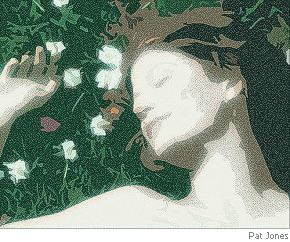

Stephen Edgar
Out of the Picture
And so, as in some formal wooded scene
By an Impressionist,
The lady with the tilted parasol
And gravel-kissing hem saunters between
The poplars, where contented couples loll
Beside a river’s idling sheen,
Then turns aside unnoticed and unmissed
Out of the picture. Still that patient eddy,
There where the willow’s pending
Compliant withe is dabbling in the stream,
Revolves the same reflexion with a steady
And self-absorbed attention. The couples seem
Insensible. The path’s already
Forgotten her, her promenade and its ending.
The day, indifferent to both time and place,
Moves elsewhere and moves on.
As pointless to depart as to delay:
In either course is folded the same space.
In Istanbul next year or here today:
The figure with the unseen face
Steps quickly from the picture and is gone.
Time Out
Only the trees perhaps, the sleeves of grass,
Leaning against the light learn to compose
The windbent seconds as they pass
In cells of cellulose.
Or else the creatures in their quest to kill
And to survive, deliver or devour,
Stretch to its limit as they fill
The membrane of the hour.
But you, where are you in the falling day?
Some drowned god drags your foot off Sounion.
This quartet eats your heart away.
You stare, but the sky is gone.
2:00
The hook receives the wire and its null weight.
Hung on the white abeyance of the wall
This door into the dark at two a.m.,
A blackness framed in black, seems to install
An absence there to unsubstantiate
Canvas and plaster where the two of them
Meet to contrive their empty stratagem.
At lower left the first step of a stair
To nowhere. A bare doorframe climbs to lose
Itself in shadow like a seeping stain.
Beyond the door the same shadow imbues
Bare floor; the hallway and its wall are bare:
A vacant threshold, immanent membrane
For what may pass in or return again.
And so I woke up at the painted hour
And turned and found you there, my dead belovèd,
Deeply asleep, washed with as faint a glow
Of night as that in which the floor is covered
Before the doorway where the shadows lour.
Shaken from sleep and propped on one elbow,
I stared to see again that face I know.
I watched your dreaming profile, I watched you,
Pillowed in shadow and your wavy hair,
Your body’s form unthreatened and content
As in the life, till waking should undo
What sleep persuaded in my eyes. But there
You lay and stayed for time to represent
Your long unbeing’s brief embodiment
Not as the lapse of seconds but an age.
No fear, but passing shock, then wonder filled
My watching as I leant by you, held fast,
Certain that you would turn to me, and thrilled
By what soft whispered nothings would assuage
The three mute years without them that had passed.
But not a move. No word. No breath. At last
I tentatively stretched a tender hand
For you, both to confirm and to caress
The thickness of those waves, and instantly
The whole of you resolved to evanesce.
Your head became the shade it lay on and
Your shape was made away; it seemed to me
The quilt sank into your nonentity.
Why did you choose this night of all the nights
That I have lain here asking for your ghost?
Perhaps for all the doors I thought to lock
Against the dark, the one that matters most
Is in the house and open and invites
Your coming with no need to call or knock;
And you entered by the door of two o’clock.

Stephen Edgar is an Australian poet known for his mastery of form and, in Clive James’s words, “a limitless wealth of cultural reference, and an unmatched ability to make science a living subject for lyrical verse.” He is a former poetry editor of Island magazine. His six published collections are Queuing for the Mudd Club, Ancient Music, Corrupted Treasures, Where the Trees Were, Lost in the Foreground, and — the most recent — Other Summers (Black Pepper, 2006). His new collection, History of the Day, will be published in early 2009. In 2004 he won the coveted Australian Book Review poetry prize for “ Man on the Moon”. He lives in Sydney.
|